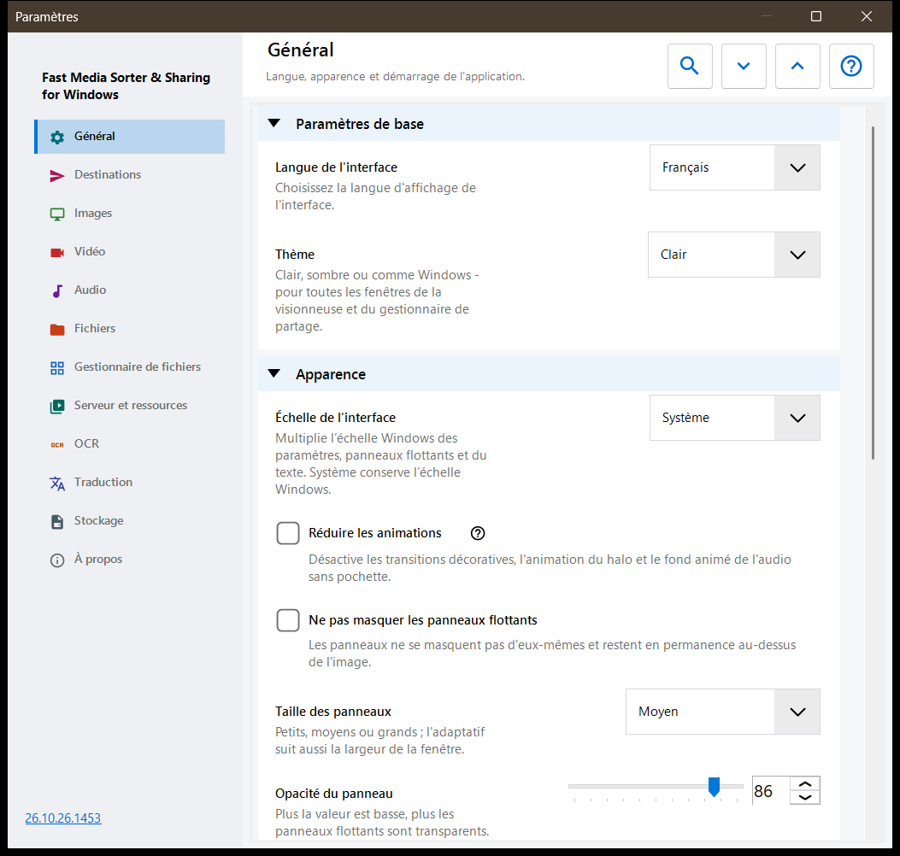
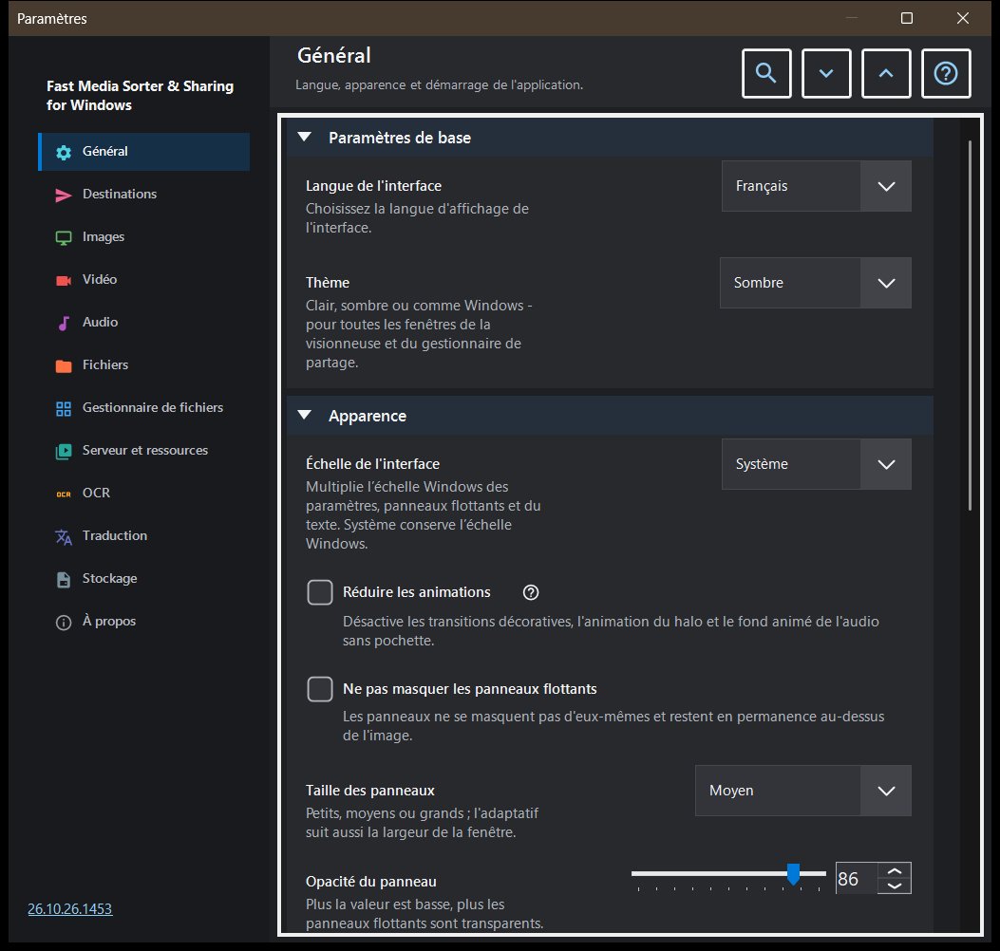

Paramètres
Paramètres
Objectif
La fenêtre Paramètres rassemble toutes les options de la visionneuse. Elle s'ouvre avec F2, avec le bouton «Paramètres» de la barre d'outils, ou depuis le gestionnaire de fichiers du panneau d'images avec son bouton «Paramètres..», qui saute directement à la page Gestionnaire de fichiers. Les pages sont listées dans un volet latéral à gauche, et les groupes d'une page peuvent être réduits.


Dans cet ordre
- Choisissez une page dans le volet latéral, ou saisissez un mot dans «Rechercher des paramètres» pour trouver une option.
- Utilisez «Tout développer» et «Tout réduire» pour ouvrir ou réduire tous les groupes de la page.
- Modifiez les options voulues.
- Appuyez sur Esc pour fermer la fenêtre.
Les éléments
Général
Langue et thème, puis l'apparence des panneaux flottants : échelle de l'interface, animations réduites, épinglage, taille, opacité, coins, les informations superposées et le masquage du curseur de la souris ; le bouton «Remettre les panneaux à leur place» ramène à leur place habituelle tous les panneaux déplacés. Le groupe Démarrage décide de ce qui se passe au lancement (ouvrir au démarrage, reprendre le dernier fichier, autoriser de nouvelles fenêtres) et contient «Afficher à nouveau les étapes d'accueil», qui rouvre la configuration initiale. Le groupe Paramètres avancés exporte et importe les paramètres supplémentaires et rétablit les valeurs par défaut.
Destinations
Les dix dossiers où les touches 1-9 et 0 déplacent un fichier ; Shift avec un chiffre de la rangée supérieure copie dans le même dossier. La grille a une ligne par touche : sélectionnez une ligne, puis utilisez «Un dossier sur ce PC..», «Ressources» (un dossier SFTP ou SMB) ou «Vider», ou déposez un dossier sur la ligne. Le groupe Apparence de la table des destinations règle la position, la largeur, la taille du texte, l'opacité et les lignes visibles de la table affichée sur l'image, et «Table des destinations sur l'image» active ou désactive cette table.
Images
Comment les images s'ouvrent et s'affichent : échelle d'une nouvelle image, rotation automatique selon la balise EXIF, «Zoom à la molette», graphiques animés via le lecteur vidéo et les informations sur la taille de l'image, la taille du fichier et la date. Fond de l'image règle la couleur autour d'une image, le Fond en perspective et le halo (dynamique, animé, vitesse). Comportement du diaporama règle l'intervalle, l'ordre aléatoire, si la navigation manuelle arrête le diaporama et ce que fait l'interface pendant celui-ci. La partie avancée comporte la mise à l'échelle de qualité et la taille de la fiche des miniatures.
Vidéo
Si les fichiers vidéo participent à la navigation, la lecture automatique, l'action à la fin d'un clip, la mémorisation de la position et «Son partagé : audio et vidéo». D'autres groupes contiennent les langues préférées pour l'audio et les sous-titres et la commande de lecture : ce que fait un clic simple, le délai des commandes, les commandes en pause et trois pas de saut.
Audio
Si les fichiers audio participent à la navigation, l'action à la fin d'une piste, le volume par défaut et le démarrage en sourdine. Le groupe d'informations et de commande contient la barre audio toujours visible, le visualiseur pour les fichiers sans pochette et la minuterie de sommeil.
Fichiers
Gestion des fichiers : avancer après la copie, ce qui se passe en cas de conflit de noms et après une copie ou un déplacement, la ligne d'état lors des opérations sur les fichiers, la création d'un dossier de destination manquant, «Supprimer vers la Corbeille» et la confirmation de suppression. Types de fichiers couvre les sous-dossiers, les extensions, les documents, la taille de l'aperçu du texte et les autres fichiers. D'autres groupes règlent les fichiers et dossiers récents, les limites des archives et les fichiers protégés .fd-sec. Touches et associations comporte le bouton «Raccourcis clavier», qui ouvre la fenêtre des touches rapides, et les associations de fichiers pour les images et les vidéos.
Gestionnaire de fichiers
Options du gestionnaire de fichiers du panneau d'images : Mode d'affichage (mosaïque ou liste), Filtre de contenu, fichiers masqués et l'action pour les fichiers qui ne sont pas des médias. Le groupe Emplacements choisit les emplacements affichés (locaux, ressources, appareils) et comporte «Mémoriser le tri».
Serveur et ressources
La liste Serveurs et dossiers réseau contient les ressources SFTP et SMB que la visionneuse peut parcourir et utiliser comme destinations. Le groupe Android / SFTP sert à publier des dossiers de ce PC par SFTP pour l'application Android ; il comporte le guide de connexion et le bouton «Gérer le serveur SFTP pour le client Android..». Chaque entrée d'un serveur d'échange propose «Enregistrer comme STANDARD..» et «Lire le STANDARD..» tant qu'elle est connectée et que son serveur conserve un STANDARD de paramètres : le premier enregistre sur le serveur les groupes de paramètres cochés comme STANDARD de votre compte, le second applique sur cet ordinateur les valeurs des groupes cochés. Les chemins, mots de passe, clés et tailles de fenêtres restent sur cet ordinateur, l'opérateur du serveur peut lire un STANDARD, et les modifications ultérieures ici restent locales jusqu'à ce que vous relisiez le STANDARD.
OCR
«Activer l'OCR» active la reconnaissance de texte, et «Exécuter automatiquement» la laisse se lancer toute seule. Le groupe Reconnaissance de texte règle la langue source, la qualité, le mode et le téléchargement des données linguistiques.
Traduction
Choisissez le service («Service de traduction») et la langue cible («Langue de traduction») ; d'autres champs contiennent l'adresse du service, le serveur Ollama local, le modèle et la clé d'API. Le groupe Traduction sur l’image règle l'opacité et la visibilité du panneau de traduction sur l'image.
Stockage
Limites des caches avec un bouton de vidage pour chacun : images décodées, miniatures du panneau d'images, archives et ressources réseau. Le cache disque de l'OCR comporte «Mettre les résultats en cache sur le disque», sa propre limite et un bouton de vidage.
À propos
Informations sur le produit et liens : Mises à jour, Réinitialiser les paramètres, Projets associés, Aide du programme, Site du projet, GitHub, Versions, Politique de confidentialité, Licence MIT et Composants tiers et licences. «Envoyer les journaux à l'auteur» affiche une fenêtre de consentement qui liste ce qui va dans l'archive, puis la transmet à votre programme de messagerie ; le programme n'ouvre aucune connexion réseau pour cela.
Documents
Activez le lecteur PDF indépendamment des filtres de tri. Choisissez une page, le défilement continu ou une double page, les couleurs, le zoom, la recherche et les limites du cache. Les boutons de page changent de page, ceux de fichier changent de fichier. Les contrôles de texte reçoivent B/N, chiffres et Suppr ; Échap revient à la vue. Réinitialiser l’apparence préserve positions et signets nommés. La lecture vocale utilise les voix Windows installées. Les mots de passe restent dans la session. Une copie temporaire locale permet de déplacer l’original. L’export normal omet historique, signets et réglages par document. Les fichiers texte ont leurs propres groupes. « Lecture complète des fichiers texte » les ouvre avec polices, thèmes, numéros de ligne et recherche ; un fichier au-delà de la limite de modification se lit par parties. « Modification des fichiers texte » ajoute Ctrl+E : l’enregistrement conserve l’encodage et les modifications non enregistrées restent dans un brouillon chiffré. « Ouvrir comme texte » dans le menu d’un fichier affiche comme texte tout autre fichier. « Traduction des fichiers texte » ajoute au panneau du document un bouton doc-html-translate : le texte sélectionné ou tout le texte de l’éditeur est transmis en copie, le fichier n’est ni enregistré ni modifié et la page s’ouvre dans le navigateur ; le fichier enregistré peut aussi être envoyé. Le groupe doc-html-translate fait demander au bouton doc-html-translate de PDF et EPUB quoi faire du document : ouvrir la page dans le navigateur et la traduire là, seulement convertir, traduire avec votre modèle Ollama local ou traduire avec Google dans la limite de dépense fixée ici, chaque exécution payante étant d'abord approuvée. Chaque exécution travaille dans son propre dossier du cache de la visionneuse, jamais à côté du document ; la page s'ouvre dans le navigateur ou par-dessus le document, et le menu du résultat du panneau du document ouvre l'original, enregistre le résultat ou traite de nouveau le document.